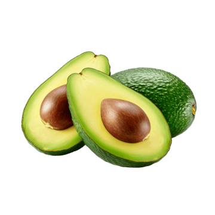

O abacate é originário da América Central e do México. É muito consumido no Brasil e se adapta bem ao clima tropical.
O plantio ocorre em clima quente. A colheita depende da região, mas geralmente acontece ao longo do ano.
As flores são pequenas e aparecem antes do fruto. Após isso, o abacate começa a crescer.
| Nutriente | Quantidade |
|---|---|
| Calorias | 160 kcal |
| Gorduras boas | 15 g |
| Fibras | 7 g |
| Potássio | 485 mg |
O abacate ajuda na saúde do coração, melhora a pele e fornece energia.
Bata abacate com leite e açúcar.
Misture abacate com tomate, cebola e limão.
Sirva o abacate com mel.